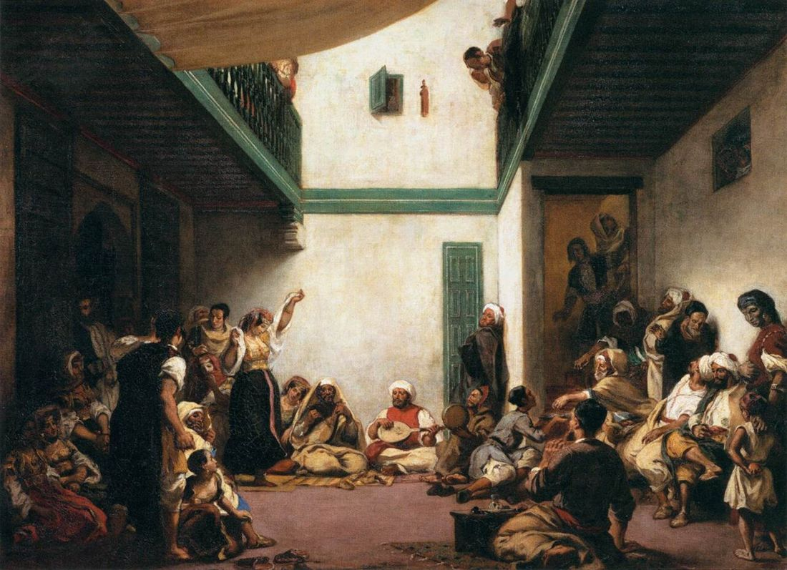
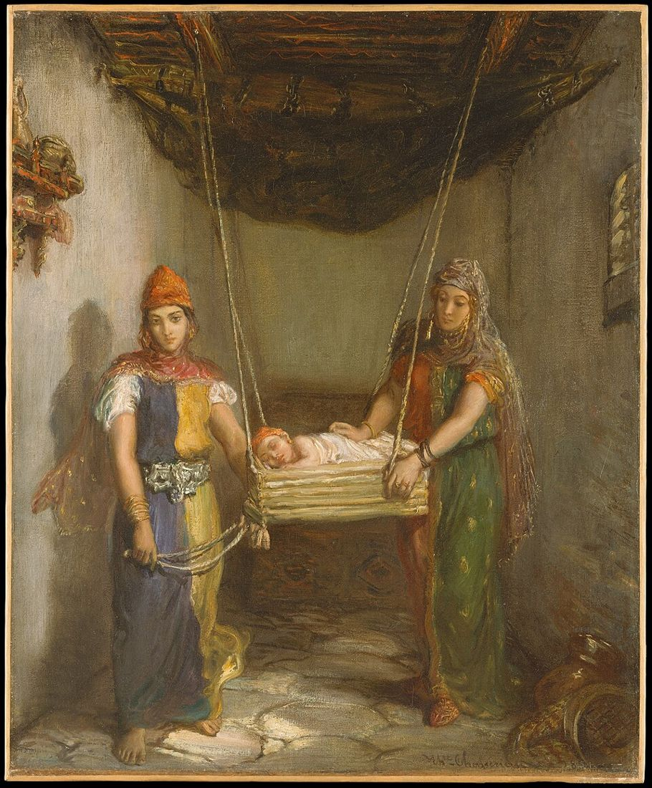
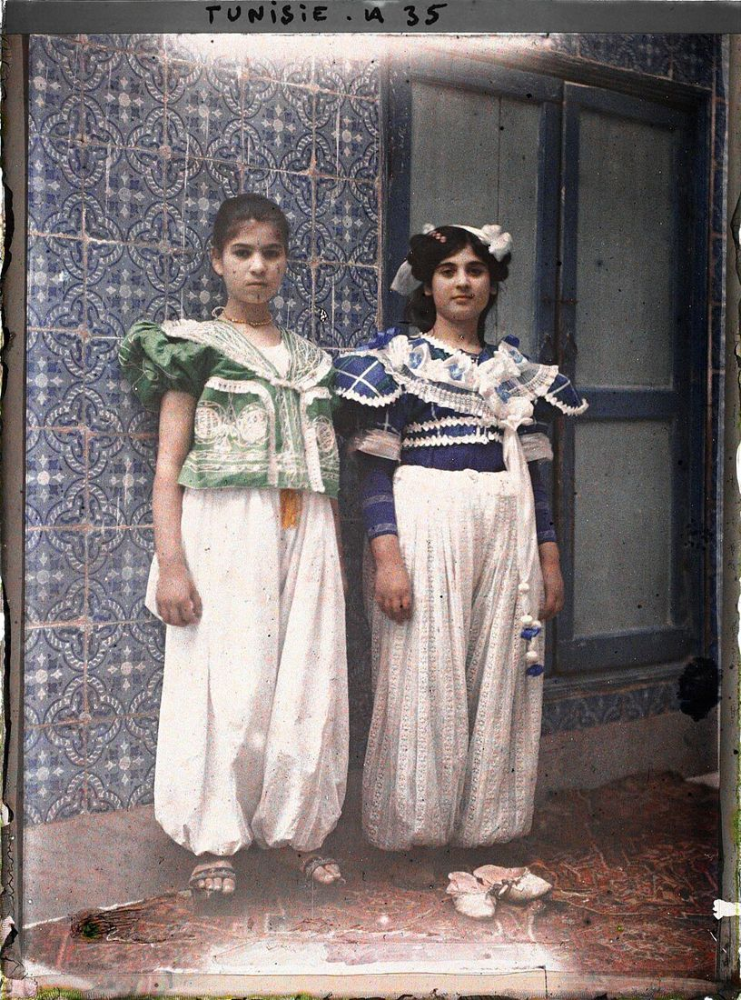
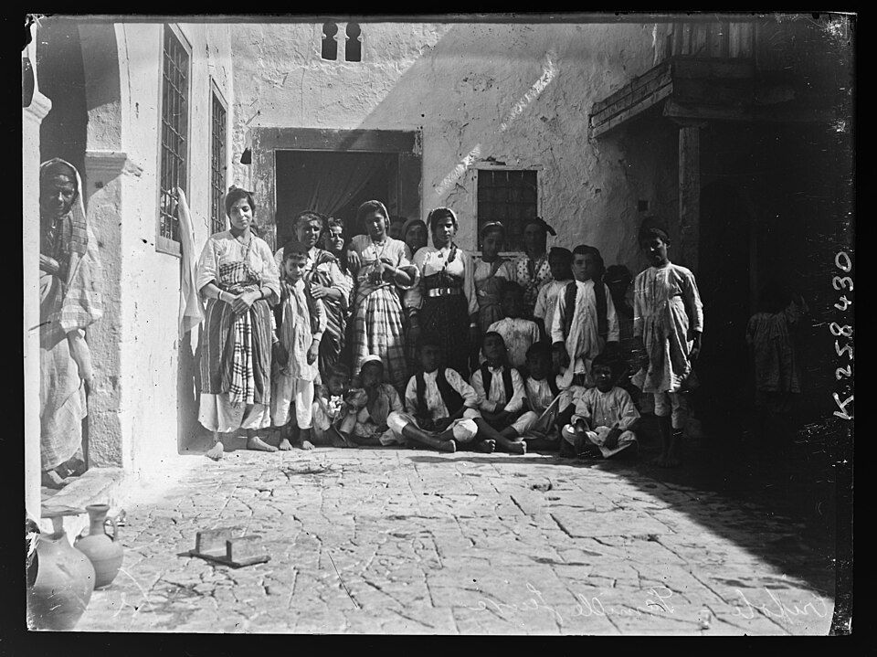
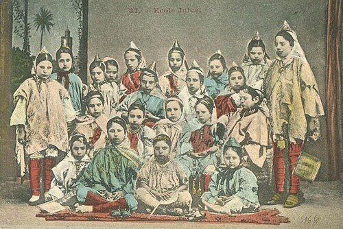
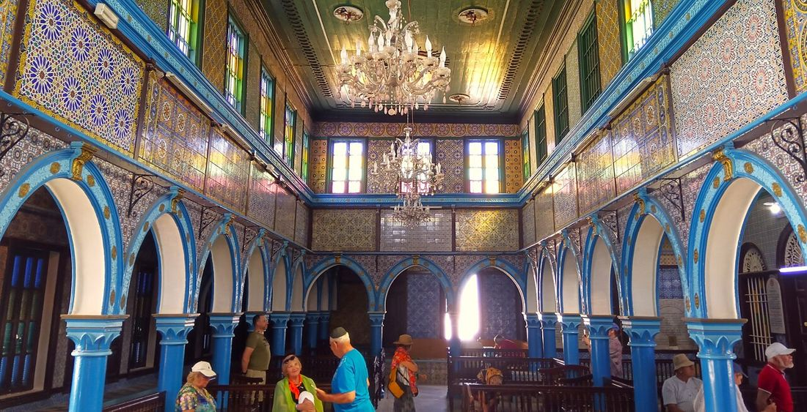

Every city in North Africa once had Jewish neighbours. Draw a city, meet the notable people that lived there, and discover the Jewish life of the Maghreb.
A history game
A game to celebrate North African and Sephardi Jewry
For more than two thousand years, Jews lived in the cities of Morocco, Algeria, Tunisia and Libya, alongside their Muslim, Amazigh and Christian neighbours. Sephardi families who fled Spain and Portugal after 1492 joined communities that were already there. Together they shaped the music, food, language and trade of the region. This game invites you to meet the people of those cities.






Pictures from Wikimedia Commons.
Made by Jeroen Penninck · LinkedIn: linkedin.com/in/jeroen-penninck
· ·